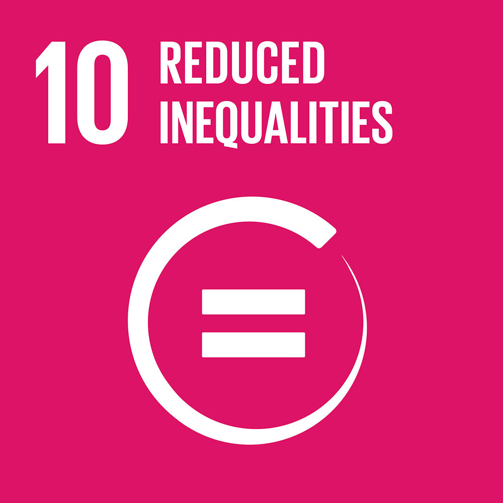
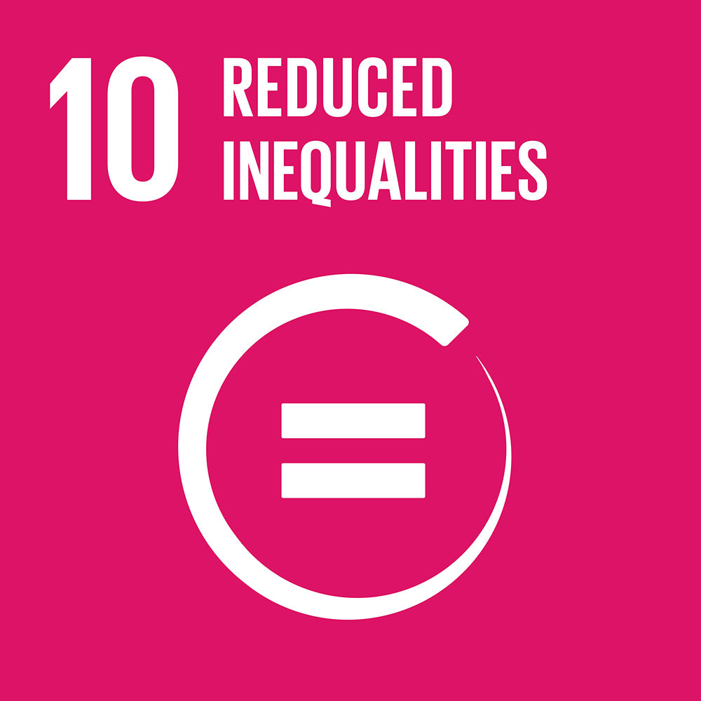
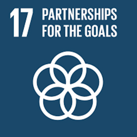
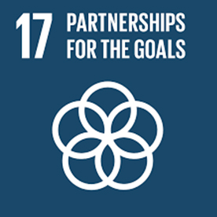
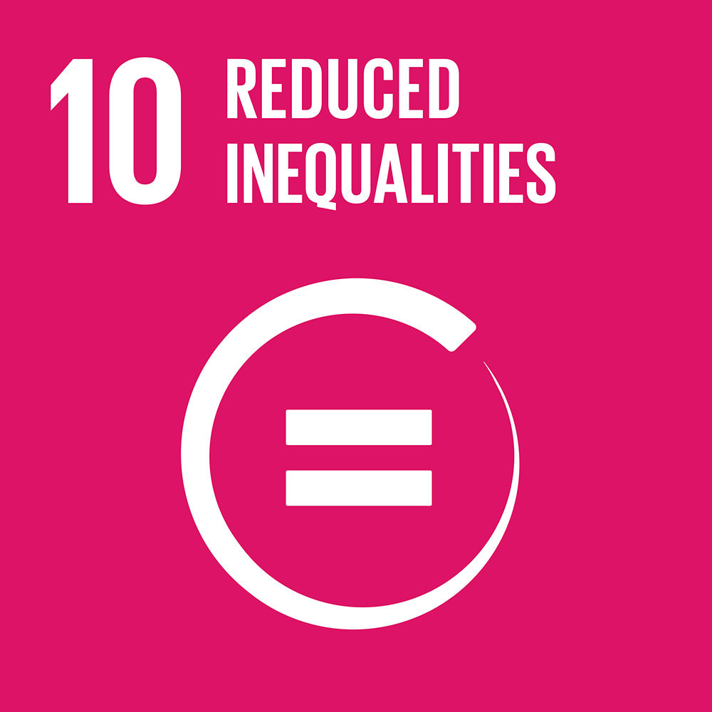
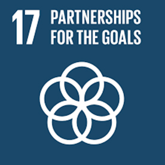

 

SDG Goals


YAF's commitment to education is very palpable in terms of its Model United Nations Conferences, Competitions, and Internships. All these programs aid students in learning through activity-oriented processes that develop critical thinking, public speaking, and diplomacy. YAF thus helps guarantee inclusive and equitable quality education by engaging young people in the discussion of global issues for the promotion of lifelong learning opportunities for all. This focus on education is important in empowering the next generation to gain the skills and knowledge needed to navigate an interdependent world.
By engaging all genders in participation in all its activities and programs, the Youth Affairs Forum serves the promotion of gender equality. In providing a forum for multiple voices to be represented and valued, YAF furthers realization toward gender equality and the empowerment of all women and girls. And with a board comprising more women than men, the approach by the organization ensures that opportunities in developing leadership skills and engaging in the global discourse are given, on an equal platform, to young women who otherwise challenge traditional gender roles and stereotypes.
YAF empowers youth from diverse backgrounds, targeting SDG 10, which aims to reduce inequality within and among countries. The Club provides access to educational and leadership opportunities for students from diverse backgrounds and promotes the equalization of the playing field for those who, due to various circumstances, are hindered by socioeconomic or cultural barriers in their lives. This helps foster an environment in which youth, regardless of background, can contribute to global discussions and decision-making on an equal footing.
All the activities organized by YAF, including its Model United Nations conferences, intrinsically work to support SDG 16 by encouraging peace, justice, and strong institutions. Through such simulations, students become more informed about international relations, diplomacy, and the governance structures that underpin these. YAF has been working on building a foundation for a more peaceful and just world by educating young people regarding the mechanisms that maintain global peace and justice. In addition, the structure purports teaching about the resolutions of conflicts and human rights, thereby further moving towards the realization of this goal.
The association that YAF does is in the spirit of SDG 17, highlighting that without partnerships, it will be hard to attain the SDGs. Through collaborative efforts with institutions, NGOs, and other organizations, YAF brings students together into a global network of actors. These partnerships increase the quality of the various programs offered and enhance a sense of global citizenship among participants. These connections are greatly enhanced by YAF and further continue making a world which is unitedly connected and collaborative for young people to act as a collective force towards sustainable development.